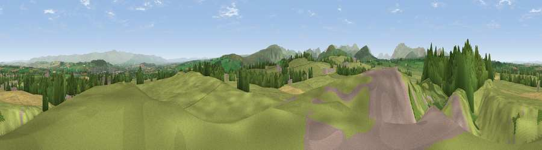

Viewpoint near Newbiggin
#6490 in England · top 35% of its area beats it · near NewbigginWhere it is
The exact computed spot (NY 46275 28675). Click the marker for map links.
The view, rendered

A 360° render of this exact spot computed from the terrain model, tree cover and land cover — summer colours, afternoon light, calibrated against photographs of famous viewpoints. Real trees, hedges and buildings will differ in detail.
The panorama
Grey silhouette: terrain skyline in each direction (720 bearings, Earth curvature and refraction included). Dashed green: skyline with trees (+15 m) and buildings (+8 m) as obstacles. Blue strip: how far the ground is visible on each bearing.
Where the view opens
Wedge length = distance to the farthest visible ground on that bearing (vegetation-aware). Rings at 10, 25 and 50 km.
What fills the view
75% grassland · 14% woodland · 8% cropland · 4% built-up
Angular shares of the visible panorama (visual magnitude), not map area. Landscape diversity 0.35 (0–1 Shannon).
Key numbers
More beautiful places nearby
The staircase of upgrades: each row has a higher view potential than everything closer. Driving times are estimates from straight-line distance, calibrated against real road routing — check an actual route before setting out.
| Place | Direction | Drive | Score |
|---|---|---|---|
| Viewpoint near Dacre | SW · 2 km | ~5 min | 69.0 |
| Viewpoint near Johnby | NW · 5 km | ~11 min | 70.0 |
| Viewpoint near Watermillock | SW · 6 km | ~13 min | 79.0 |
| Viewpoint near Watermillock | S · 8 km | ~16 min | 82.6 |
| Viewpoint near Watermillock | S · 8 km | ~16 min | 83.5 |
| Viewpoint near Legburthwaite | SW · 18 km | ~31 min | 83.8 |
| Viewpoint near Legburthwaite | SW · 18 km | ~32 min | 84.5 |
| Skiddaw South Top | W · 20 km | ~34 min | 85.8 |
54.65030, -2.83414 · source: screening · position refined by local search. Computed location — check access rights before visiting.